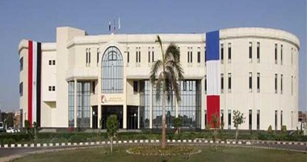

Founded in 2002, the Université Française d’Égypte (UFE) is a higher education institution under the dual supervision of Egyptian and French ministries of higher education. The UFE offers a promise to the new generation of pathfinders. A promise to receive unparalleled high-quality educational programs, a solid integration into the job market and a dedication to securing your professional future. The hub of French higher education in Egypt, the UFE delivers a multi-cultural experience as it offers a number of degrees from acclaimed French universities, accredited by France’s Ministry of Higher Education, Research and Innovation.
The UFE aims to bring to its students the excellence of French education and training to Egypt. Offering a true multicultural experience, the university plans to nurture the next generation of pathfinders and extraordinary visionaries across different fields. A decade since its inauguration, the university aims to actively contribute to the development of education standards in Egypt. UFE is a bridge between Europe, Middle East and Africa in Cairo.
Offering a true gateway to French education in Egypt, the UFE plans to continue to expand its current academic, scientific and cultural partnerships with French universities and institutions. From the overall experience to the tailored curriculums and progressive training – the university seeks to keep pace with the French and European higher education systems. Including the best French and Egyptian caliber, the university’s staff is handpicked to facilitate the university’s goal to offer the highest quality of education.